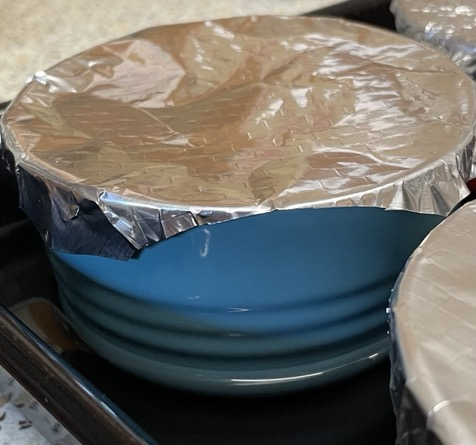
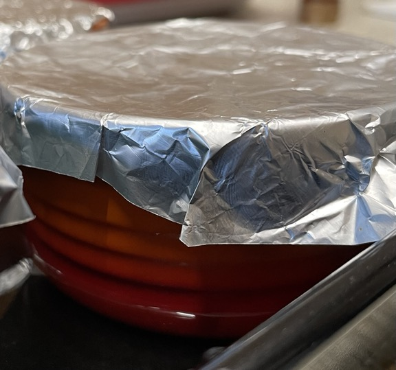
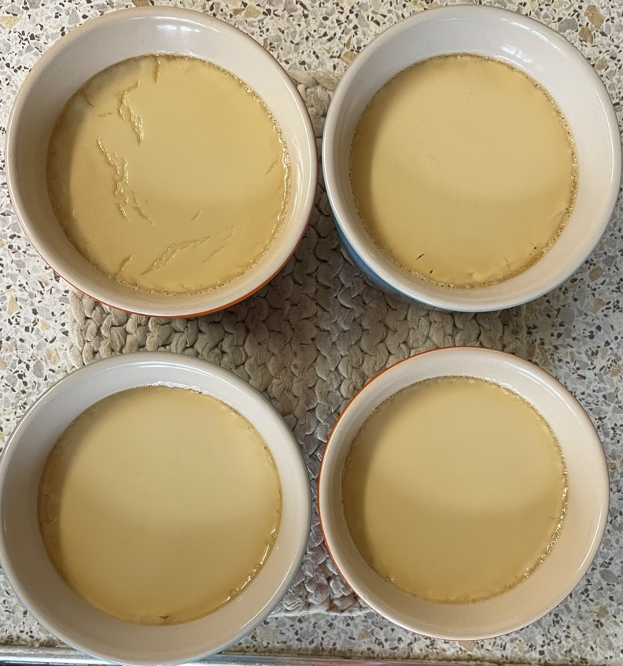

Sugar custards
Milk
- Add to pan and warm just enough to dissolve sugar
- 350ml (360g) full-fat milk
- 150ml single cream
- 80g light brown muscavado sugar
- 1 tbsp vanilla extract
- pinch of salt
Custard
- Whisk to combine in a bowl
- 5 egg yolks (120g)
- Gradually add milk mixture to yolks whisking constantly
- Remove any foam
- Divide mixture equally between 4 ramekins in a baking dish
- Cover each ramekin with foil squares with corners chopped off (size 1½ width of ramekins)
- Pour warm water into baking dish to halfway up sides of ramekins
Bake
- Preheat oven to 160°C
- Bake for 45 mins until custards are set, rotate tray 180°C halfway
- Leave to cool for 90 mins (without foil)
- Chill in fridge for 1 hour (with foil)
Serving
- roasted rhubarb
- Calories = 1000, 1 portion = 250
Notes
- try: 150C with less water
- made: 24 Sep 2022
- Reduced heat to 150°C but slightly runny at bottom
- Too much heat and custard will split, only warm milk in pan until sugar is disolved
Pics
2022 Sep - 160°C
Top of two custards split, maybe too hot or foil square too small
  